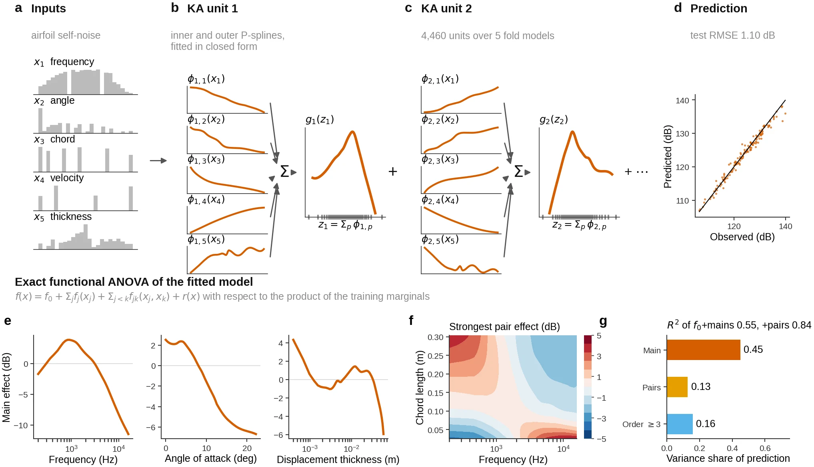
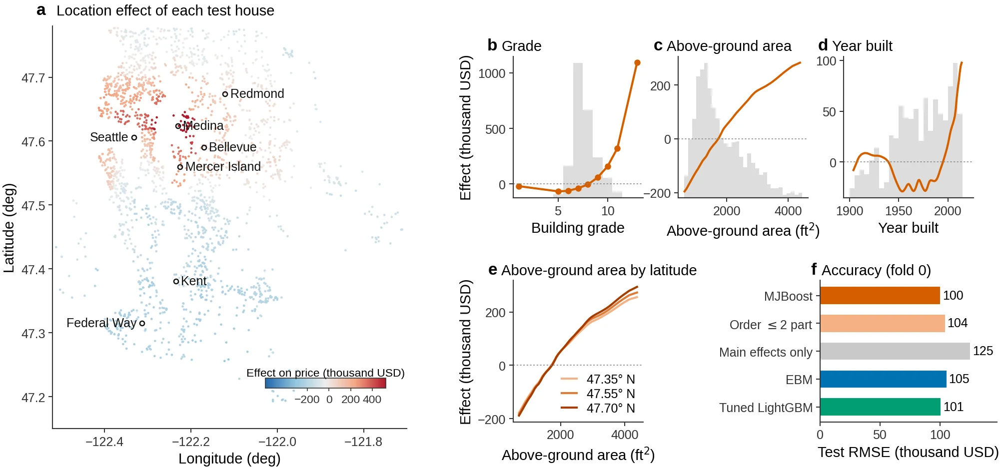

Interpretable machine learning
MJBoost
Gradient boosting with Kolmogorov–Arnold units: interpretable regression and classification beyond pairwise interactions.
Minjong Cheon, Hanseon Joo, Eunji Lee · 2026
How it works
One Kolmogorov–Arnold unit per round
Each boosting round adds one unit g(φ1(x1) + φ2(x2) + …). Its inner and outer functions are penalized splines, fitted in closed form by alternating penalized least squares, without stochastic gradient descent. Categorical and missing inputs enter the units directly.
Because a unit sees each input through one inner function, the fitted model splits exactly into main effects, pair surfaces and a higher-order remainder: a functional ANOVA that one-dimensional convolutions compute. Where the data allow, the model reads as curves and surfaces; where they do not, the decomposition measures how much lies beyond pairs.

Beyond pairs
Targets in which the first k of eight inputs act jointly
EBM, limited to pairs, stalls at the error of the best order-≤2 approximation from k = 3, and so does MJBoost truncated to its own order-≤2 part. The full model keeps the error low, up to 13 times lower than EBM's, and its decomposition recovers the true variance share of every order to within 0.04.
Normalized test RMSE (RMSE / sd of the noise-free target, log scale), mean over three seeds; 3,000 training rows.
OpenML-CTR23
Every one of the 35 regression tasks
Ten folds per task. Against EBM, MJBoost has a significantly lower test RMSE on 21 tasks and a higher one on 2, with a 29.1% lower geometric-mean RMSE. Against tuned LightGBM, a black box, it is significantly lower on 10 and higher on 12, with a 13.2% lower geometric-mean RMSE.
Ratio of the ten-fold mean test RMSEs, MJBoost / baseline (log scale; left of 1: MJBoost more accurate). † task of the development data.
Reading a fitted model
Curves and surfaces, exactly
Main and pair effects reproduce 0.994 of the variance of the King County model, so it reads almost entirely as curves and surfaces, each an exact part of the model. Its test RMSE is 100.2 thousand USD, below tuned LightGBM (100.6) and EBM (105.3); its readable part alone gives 104.1.
With Newton steps the same unit fit classifies: on 32 binary tasks of OpenML-CC18 its log-loss is on par with EBM's, and on 11 multiclass tasks its mean log-loss is lower than EBM's on 8 and than tuned LightGBM's on 7.

Use it
A scikit-learn estimator
# pip install mjboost from mjboost import MJBoostRegressor, MJBoostClassifier model = MJBoostRegressor().fit(X_train, y_train) # pandas DataFrame: categories and NaN as they are pred = model.predict(X_test) ex = model.explain() # exact functional ANOVA ex.shares(X_test) # variance of main / pair / higher-order parts ex.plot_main("age"); ex.plot_pair("lat", "long") clf = MJBoostClassifier().fit(X_train, labels) # two or more classes clf.explain(class_="setosa").importance(X_test)
Cite
Minjong Cheon, Hanseon Joo and Eunji Lee. Gradient Boosting with Kolmogorov–Arnold Units for Interpretable Regression beyond Pairwise Interactions. 2026.